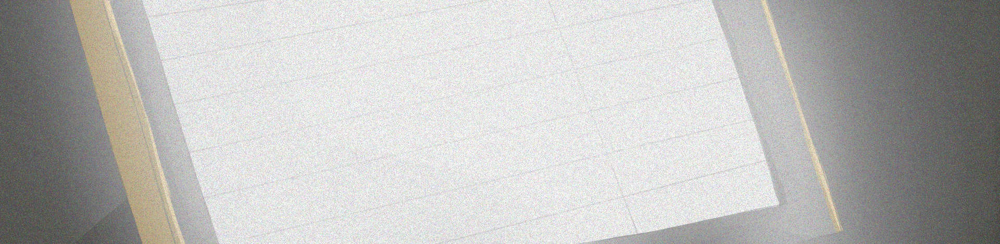

今日も何でもない日だった。
講義は午前で終わりだったし、親友とカラオケに行った。
久々に行ったけど、やっぱカラオケ超楽しいね！
カラオケがストレス発散といわれるのも頷けるな。
・・・自分の歌はそこまで下手ではないはず。多分きっと。まぁ気にしたら負けだよね。

そういえば、履歴見てたら曲名で文章作ってる人とかいたな。そんな都合のいい曲名あるのが不思議で仕方なんだけど。あとは永遠に同じ曲入ってたりとか、国歌歌ってる人もいたな。履歴見るのもカラオケの醍醐味だよね。
親友は自分の知らないやつ歌ってたな。なんだっけか・・・なんちゃらかんとかってやつ。だめだ全然わかんない。
自分と親友の曲の趣味ほんとに合わないんだよな～。まぁ別にいいんだけどさ。親友も同じこと思ってんだろうし。
また近々行くか～！今度はテンション上がるやつ歌おうかな。
なんか、大切なことを忘れているような・・・。まぁどうせ戻れるしいいや。